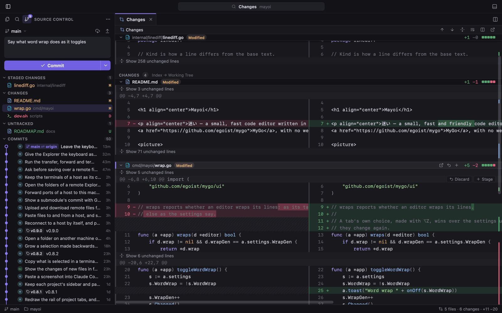

Git that shows you the whole change.
Stage, commit, amend, undo, pull and push from one view. Every changed file sits in a single diff tab, folded around the edits, inline or side by side.
- Click a gutter mark to peek the line at
HEAD, then revert or stage it - A commit graph with branches, tags and merges
- Blame for the line your caret rests on
- Commit messages written by AI, with secrets left out of the diff